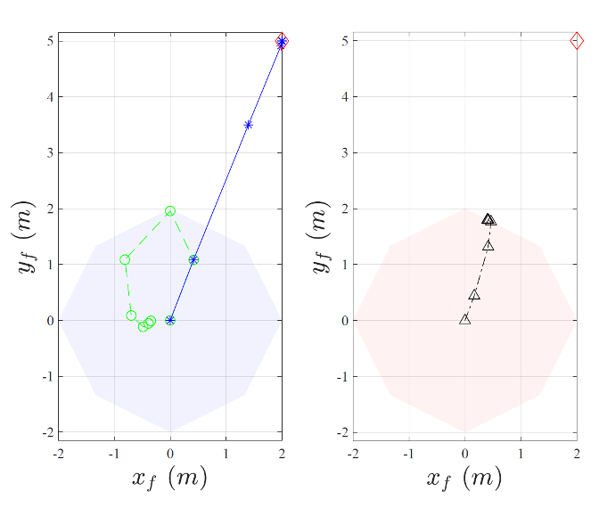
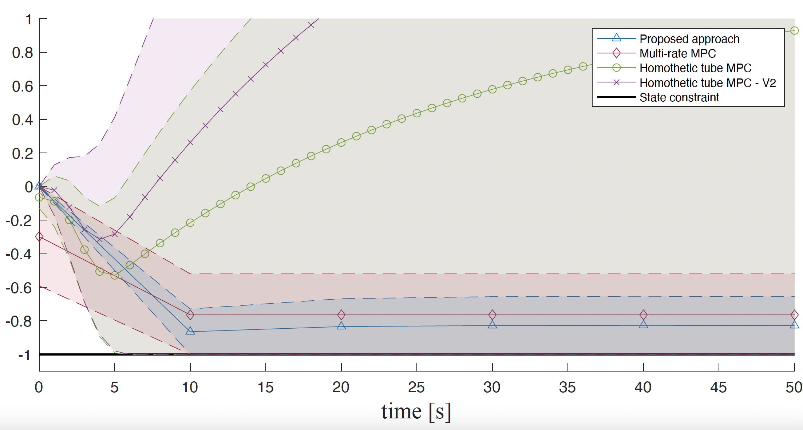
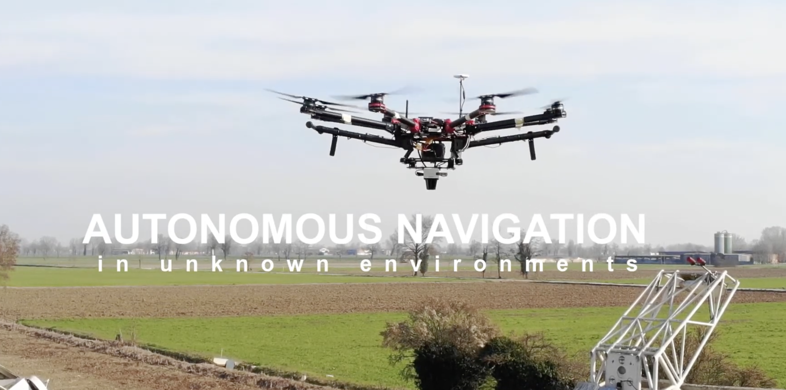

01
Model Predictive Control
Model Predictive Control is the core methodology in my work. I use predictive optimization to design feedback laws that explicitly account for constraints, uncertainty, safety, robustness, and performance. This makes MPC a natural framework for autonomy, where controllers must plan ahead while reacting to changing conditions.
I am interested in constrained control, predictive safety filters, robust MPC, tube MPC, multi-trajectory MPC, and the safety/performance tradeoffs that appear when theoretical guarantees meet real-time implementation.


